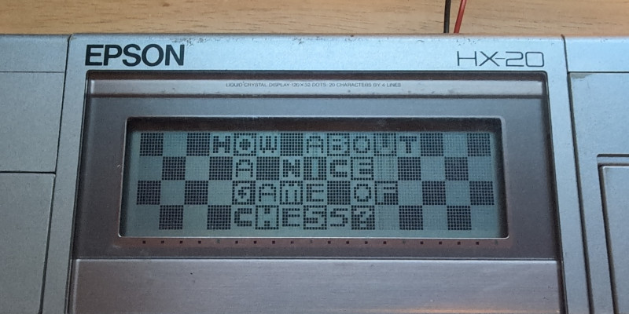

Epson HX-20 Image View
Here is a set of programs to easily display an image on the LCD screen of the Epson HX-20. The image needs to be 120x32, the resolution of the HX-20 LCD screen, and monochrome. It should be converted to the PBM format so it can be easily converted to pixel data which is embedded into the resulting HX-20 binary program.
Here is the assembly program part, to be assembled with dasm:
processor hd6303
; Hardware registers:
LCDSEL equ $26
LCDDAT equ $2A
GATEB equ $28
; Kernel routines:
DSPLCN equ $FF49
KEYIN equ $FF9A
MENU equ $FF25
org $1000 ; Run from HX-20 RAM.
; Program:
start:
; Initialize variables:
ldab #0
stab lcd_col
stab lcd_row
stab px_byte
stab px_byte+1
ldab #%00001000
stab lcd_no
ldab #$ff
stab px_bit
; Clear the whole LCD screen:
ldab #0
jsr DSPLCN
next_lcd:
; Check if reached the last LCD:
ldaa lcd_no
cmpa #%00001110
bne continue
jmp end
continue:
inc lcd_no
ldaa #$80
staa lcd_col
next_col:
ldaa #$40
staa lcd_row
next_row:
jsr px_inc
ldd px_byte
addd #pixels
xgdx
ldaa 0,x
ldab px_bit
px_shift:
beq px_shift_done
asra
decb
jmp px_shift
px_shift_done:
anda #1
beq px_skip_draw ; Change to 'bne' to invert image.
; Draw one pixel:
ldaa lcd_no
staa LCDSEL
ldaa lcd_col
staa LCDDAT
sei
lcd_busy_1:
tst GATEB
bpl lcd_busy_1
ldx LCDDAT ; Clock LCD SCK signal.
ldx LCDDAT
ldx LCDDAT
ldx LCDDAT
cli
ldaa lcd_row
staa LCDDAT
sei
lcd_busy_2:
tst GATEB
bpl lcd_busy_2
ldx LCDDAT ; Clock LCD SCK signal.
ldx LCDDAT
ldx LCDDAT
ldx LCDDAT
cli
px_skip_draw:
ldaa lcd_row
adda #4
staa lcd_row
suba #$60 ; Subtract to compare.
bne next_row
ldaa lcd_col
inca
staa lcd_col
cmpa #$E8
beq next_lcd
cmpa #$A8
bne next_col
adda #$18 ; Will be 0xA8 here.
staa lcd_col ; Store as 0xC0.
jmp next_col
end:
; Wait for keypress and go back to main menu.
jsr KEYIN
jmp MENU
; Pixel increment subroutine:
px_inc: ldaa px_bit
inca
staa px_bit
cmpa #8
bne px_rts
ldd px_byte
addd #1
std px_byte
ldaa #0
staa px_bit
px_rts: rts
; Variables:
lcd_no: dc.b
lcd_col: dc.b
lcd_row: dc.b
px_byte: dc.w
px_bit: dc.b
; Imported pixel data:
pixels:
incbin "img.bin"
Here is the C program to convert PBM images to binary pixel data:
#include <errno.h>
#include <stdbool.h>
#include <stdint.h>
#include <stdio.h>
#include <stdlib.h>
#include <string.h>
static bool image[32][120];
static int pbm_read(const char *path)
{
FILE *fh;
char line[128];
int c;
int x;
int y;
fh = fopen(path, "rb");
if (fh == NULL) {
fprintf(stderr, "fopen() failed with errno: %d\n", errno);
return -1;
}
fgets(line, sizeof(line), fh); /* Header */
if (line[0] != 'P' && line[1] != '4') {
fprintf(stderr, "Not a binary PBM image!\n");
fclose(fh);
return -1;
}
reread:
fgets(line, sizeof(line), fh); /* Additional Headers */
if (line[0] == '#') {
goto reread;
}
if (strncmp(line, "120 32", 6) != 0) {
fprintf(stderr, "Dimensions must be 120x32!\n");
fclose(fh);
return -1;
}
x = 0;
y = 0;
while ((c = fgetc(fh)) != EOF) {
image[y][x] = (c >> 7) & 1;
image[y][x+1] = (c >> 6) & 1;
image[y][x+2] = (c >> 5) & 1;
image[y][x+3] = (c >> 4) & 1;
image[y][x+4] = (c >> 3) & 1;
image[y][x+5] = (c >> 2) & 1;
image[y][x+6] = (c >> 1) & 1;
image[y][x+7] = c & 1;
x += 8;
if (x == 120) {
x = 0;
y++;
if (y == 32) {
break;
}
}
}
fclose(fh);
return 0;
}
static int pixels_write(const char *path)
{
FILE *fh;
int c;
int x;
int y;
int base_x;
int base_y;
int lcd_no;
fh = fopen(path, "wb");
if (fh == NULL) {
fprintf(stderr, "fopen() failed with errno: %d\n", errno);
return -1;
}
for (lcd_no = 0; lcd_no < 6; lcd_no++) {
base_y = lcd_no / 3 * 16;
base_x = (lcd_no * 40) % 120;
for (y = 0; y < 16; y += 8) {
for (x = 0; x < 40; x++) {
c = (image[base_y+y] [base_x+x] );
c |= (image[base_y+y+1][base_x+x] << 1);
c |= (image[base_y+y+2][base_x+x] << 2);
c |= (image[base_y+y+3][base_x+x] << 3);
c |= (image[base_y+y+4][base_x+x] << 4);
c |= (image[base_y+y+5][base_x+x] << 5);
c |= (image[base_y+y+6][base_x+x] << 6);
c |= (image[base_y+y+7][base_x+x] << 7);
fputc(c, fh);
}
}
}
fclose(fh);
return 0;
}
int main(int argc, char *argv[])
{
if (argc != 3) {
fprintf(stderr, "Usage: %s <in> <out>\n", argv[0]);
return EXIT_FAILURE;
}
if (pbm_read(argv[1]) != 0) {
return EXIT_FAILURE;
}
if (pixels_write(argv[2]) != 0) {
return EXIT_FAILURE;
}
return EXIT_SUCCESS;
}
And here is a Makefile to tie it all together:
all: hx20img.srec hx20img.wav
hx20img.srec: hx20img.bin
srec_cat hx20img.bin -binary -offset 0x1000 -o hx20img.srec -motorola
hx20img.wav: hx20img.bin
bin2hxwav hx20img.bin hx20img.wav 1000 hx20img
hx20img.bin: hx20img.asm img.bin
dasm hx20img.asm -ohx20img.bin -f3 -lhx20img.lst
img.pbm: img.png
convert img.png img.pbm
pbm2bin: pbm2bin.c
gcc -o pbm2bin pbm2bin.c -Wall -Wextra
img.bin: pbm2bin img.pbm
./pbm2bin img.pbm img.bin
.PHONY: clean
clean:
rm -f pbm2bin img.pbm *.wav *.srec *.bin *.lst
Running make will produce both an S-record and a WAV file as long as the proper tools are installed and an "img.png" image file is present. Check here for the special "bin2hxwav" program. The S-record can be loaded into the hex20 emulator.
The WAV file can be played to a real Epson HX-20 using the external cassette interface. Enter the MONITOR and type these commands:
A
1000
FFFF
/
R C,*.*
Play the WAV file, and when it's done, type:
G1000
Sample image:
Displayed on a real HX-20:
